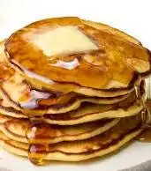

Pancakes

Good old fashioned breakfast
2 Cups of Bisquick
1 cup of milk
table spoon of melted butter
teaspoon of vanilla extract
2 Large eggs
1/4th cup of sugar
Steps
- Combine Ingredients in large bowl
- Poor in center of pan let battter form its own circle
Home